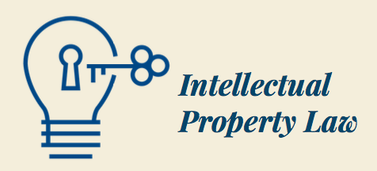

For purposes of e cient delivery of services, our principal areas of
practice are tailored to suit your needs with the highest standards
of quality, integrity, con dentiality and legal ethics.

Intellectual property (IP) refers to a class of intangible assets
that result from a person’s intellectual or creative effort. Kenyan
Law, led by the Supreme law, recognizes all forms of IP including
trademarks, patents, copyright, industrial designs and plant
breeders’ rights, trade secrets, know-how We have a specialist
intellectual property (IP) team that offers comprehensive,
cross-border service to meet our clients’ local, regional and global
needs in all these forms of Intellectual Property.
Our expertise in this area include:
- Trademarks
- Availability searches.
- Registration of trade and service marks.
- Licensing and assignments.
-
Advice and representation in Opposition and citation
proceedings.
-
Advice and representation in infringement and passing off
proceedings.
-
Advice and representation in expungment proceedings (on
grounds of nonuse and without just cause).
- IP due diligence and verification.
- Patents and Utility Models
-
Local and ARIPO Patent Applications for grant of Patent.
-
National Phase entry of PCT Patent Applications for grant of
Patent.
- Annuity payments (For Applications and Patents).
- Licensing and assignments.
-
Conversion of Patent applications to utility model
applications.
- Industrial Designs
- Applications for registration of Industrial designs.
- Licensing and assignments.
- Advice and representation in Opposition proceedings.
-
Advice and representation in infringement and passing off
proceedings.
- Advice and representation in expungment proceedings.
- Copyright & Related Rights
- Advise on the subsistence of copyright.
- Representation in Infringement proceedings.
- Licensing and Assignment of economic rights.
-
Enforcement of royalty rights for and against collective
management societies.
Corporate commercial encompasses a wide portfolio of services
ranging from business establishment to liquidation and receivership.
We advise clients on the major aspects of corporate commercial legal
issues. Our Corporates team is a dynamic, solution oriented and
respectably quali ed team that continues to render quality work to a
wide range of clientele including high net worth individuals and
corporates.
Our expertise in this area include:
- Incorporations.
- Public and private Mergers and Acquisitions.
- Share and asset disposals.
- Joint ventures.
- Corporate due diligence & regulatory compliance.
- Liquidation and receiverships.
- Competition law advisory.
- Insurance.
- Banking and Finance.
- Islamic Finance.
- Enforcement of Minority Shareholder rights.
Land laws in Kenya have evolved overtime from the received colonial
laws that provided over Five (5) different registration regimes to
self-contained and integrated laws a er the 2010 Constitution. While
the objective was to harmonize all land laws under one regime, the
ensuing transition has not been a smooth one as expected.
Several practical legal con icts still loom large and this has been
the cause of a lot of uncertainity and, inevitably, con ict on among
others title, use and ownership of real estate in Kenya. In the
circumstances a good understanding of the evolution of land laws on
Kenya is key.
Our specialist team of advocates represent both corporate and
individual clients in Real Estate, Investments, Project Financing
and Property development.
Preparation of licenses, cautions, prohibitions and easements Powers
of attorney
Our expertise in this area include:
- Transfer of land (purchase and sales).
- Mortgages and charges.
- Rectification and replacement of titles.
- Structuring complex development projects.
- Trusts relating to land.
- Single and Multi-Storied buildings.
- Gated community developments.
- Malls.
- Estates.
- Joint Ventures.
- Leases.
The firm’s partners and associates in the dispute resolution •
department have extensive experience advising domestic and
international, institutions, County governments and regulatory
bodies in respect of intricate and high value disputes. We take a
practical and solution oriented approach to all our advisory work in
this area.
The team strives toward dispute avoidance by ensuring that relevant
counsel is provided and options explored before any litigation
process can be considered.
Our expertise in this area include:
-
Legal opinions to clients with regards to all aspects of dispute
resolution.
-
Representing clients in arbitrations and regulatory tribunals
(both local and international).
-
Acting as Arbitrators in Legal disputes referred to arbitration.
-
Representing clients at the Chief Magistrates Courts, the High
Court, Environment and Land Court, The Employment and Labor
Relations Court, the Court of Appeal and the Supreme Court. Our
Representation covers all the High Court stations in the
Republic of Kenya.
-
Representing client in regulatory tribunals including before the
Registrar of Trademarks, the National Environmental Tribunal,
the Public Procurement and Administrative and Review Board, the
Public Private Partnerships Petitions Committee, the Industrial
Property Tribunal, The Business Premises Rent Tribunal, Sports
Tribunal, the Energy Tribunal, the HIV Tribunal among statutory
tribunals.
-
Advising clients on alternate dispute resolution processes,
including mediation.
Since the promulgation of the 2010 constitution, Employment and
Labour relations have experienced radical and comprehensive shi s
from a contractual to a rights based approach to the relationship.
The Right to fair labour practices now underpins all labour
relations in Kenya.
The enforcement mechanisms are now more vibrant than ever and
employers and employees are now, more than ever before in the
history of Kenya, paying serious attention to the ne print in their
employment relationship. The firm has advised and has expertise in a
broad spectrum of labour issues in Kenya and the firm’s partners
have represented clients in precedent setting employment dispute to
the highest court in the land – the Supreme Court
Our expertise in this area include:
- Managing disciplinary processes.
-
Advising on procedure for termination of contracts including
restructuring, redundancies and retrenchments.
-
Advising employers and employees on collective bargaining.
-
Advising on and dra ing employment contracts for local and
foreign contracts of service and services. Advising on employee
occupational health and safety and workmen’s compensation.
-
Representing Employers and employees in Labor disputes at the
specialist Employment and labor relations court, the Court of
Appeal and the Supreme Court.
The principal objective of every business is to increase the wealth
of its shareholders/owners. Business are therefore more about the
people that drive them. Our team dedicates a substantial portion of
its time to cater for high net worth individuals on a wide range of
private matters. Our services in this area are greatly personalized
to meet the special needs of each client both locally and off-shore.
Our expertise in this area include:
-
Immigration including – Visa applications, special passes, work
permits for employees and their defendants, applications for
dual citizenship.
-
Probate and succession including dra ing of wills,
administration of estates and trusts, creation of trusts,
resealing of grants and general succession advisory.
- Notarial services.
- Family and matrimonial causes.
- Tax compliance services.
- Privacy & Reputation enforcement.
The right to a clean and healthy environment is a constitutional
right in Kenya. The Obligation to respect, uphold and promote this
right is accordingly cardinal and is enforced with unbridled zeal in
Kenya.
A clean Environment encompasses all aspects of the environment
including clean air, water and protection from excessive noise and
proper planning of living conditions.
Our Environmental laws are actively enforced in this regard both at
the National Enviroment Tribunal and the High Court.
Our expertise in this area include:
- Advise on Environmental management laws and regulations.
-
Challenging decisions of the National Environmental Tribunal in
refusing to grant, or granting Environmental Impact Assessment
reports.
The firm advises sponsors, project companies and lenders on projects
and project financings across major sectors on local laws. We have
capacity to provide comprehensive legal services to the various
counterparties to a Project Finance transaction with aspects of
Kenyan Law.
Our expertise in this area include:
-
Advising on appropriate Project structures under Kenyan Laws
- Conducting legal due diligence
- Risk allocation
- Reviewing the “bankability” of project agreements
-
Financing arrangements (Bank and bond) and relevant security
packages under Kenyan Laws.
The firm provides full due diligence and legal audit services on a
wide array of regulatory subjects in Kenya. Our team of Advocates
and independent consultants offer a combination of legal expertise
and commercial experience to corporations of all sizes including
financial institutions in this regard.
Our expertise in this area include:
-
Due diligence as part of a company or business acquisition.
- Legal audits as part of an exit strategy/exit pnning
-
Due diligence reports for internal compliance/reporting
purposes.
- Due diligence reports for nancial/lending purposes
- Legal audits